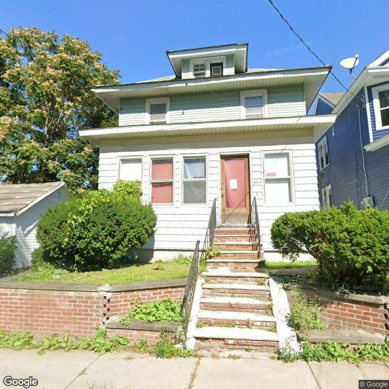

Property entry
420 Burdick Ave
Published 2026-10-12T01:03:00+00:00
Parcel key: 003-17-390

City records
Matches use parcel IDs, normalized addresses, or nearby coordinates. Confirm a match against the source record before relying on it. Publication dates are not source-data dates.
Vacant properties 1
- Latitude
- 43.07778293
- Longitude
- -76.15602244
- ObjectId
- 685
- Owner
- MD Hamiduzzaman
- OwnerAddress
- 721 Hillside St Syracuse, NY 13208
- PropertyAddress
- 404 Burdick Ave
Rental registry 2
- Latitude
- 43.07792796
- Longitude
- -76.15670984
- NeedsRR
- Yes
- ObjectId
- 982
- PropertyAddress
- 1000-02 Lemoyne Ave & Burdick Ave
- RR_contact_name
- JAK Rentals LLC
- Latitude
- 43.07807957
- Longitude
- -76.1566063
- NeedsRR
- Yes
- ObjectId
- 985
- PropertyAddress
- 1006 Lemoyne Ave
- RR_app_received
- 1712620800000
Code violations 0
No matches stored for this feed. The feed or address matching may be incomplete; this is not confirmation that no records exist.
Unfit properties 1
- Latitude
- 43.07778293
- Longitude
- -76.15602244
- ObjectId
- 152
- SBL
- 003.-17-36.0
- address
- 404 Burdick Ave
- area_involved
- exterior
AI image observations (unverified)
These observations are generated from an image, not an inspection or an official code finding. No human verification is recorded here.
Image capture date: Not recorded. The entry publication date does not establish the age of the image.
Automated image description
The property exhibits a multi-story structure with visible wear on the exterior steps and significant unmanaged vegetation in the front yard.
Property type guess: two_family
Visible conditions
- The building features light-colored horizontal siding on the first floor and light green horizontal siding on the upper floor and dormer.
- The front entry consists of brick and concrete steps with metal railings, which appear to be in disrepair with cracks and vegetation growth.
- The front yard contains some maintained shrubs but also areas of unmanaged grass and weeds, particularly along the retaining wall and near the sidewalk.
- Windows on the first floor have red coverings or curtains.
- A small, possibly accessory, structure is visible to the left of the main building.
Condition scores
- Roof
- unclear
- Siding Or Facade
- fair
- Windows Doors
- fair
- Porch Or Entry
- poor
- Yard Or Lot
- poor
- Trash Debris
- none_visible
- Vegetation Overgrowth
- major
Visible flags
- Boarded Windows Or Doors
- no
- Fire Damage Visible
- no
- Structural Damage Visible
- no
- Vacancy Signs Visible
- no
- Active Construction Visible
- no
Possible image-only flags
- Damaged exterior steps with vegetation growth.
- Significant unmanaged vegetation in the front yard, on the retaining wall, and encroaching on the steps.
AI review boxes
- Damaged steps: Steps show cracks, uneven surfaces, and vegetation growth.
- Unmanaged vegetation: Tall weeds and grass are evident in the lawn area and on the retaining wall.
Review reasons
- AI requested human review
- Possible image-only issue
Image quality
- Available
- True
- Bytes
- 108679
- Needs Rerun
- False
ACS tract context
Census Tract 2; Onondaga County; New York
- Total population
- 3511
- Median household income
- 51848
- Poverty rate
- 28.1
- Housing units
- 1686
- Vacancy rate
- 14.7
- Renter-occupied share
- 50.1
- Median gross rent
- 146700
OpenStreetMap nearby
meter search radius
OpenStreetMap lookup failed: HTTP Error 406: Not Acceptable